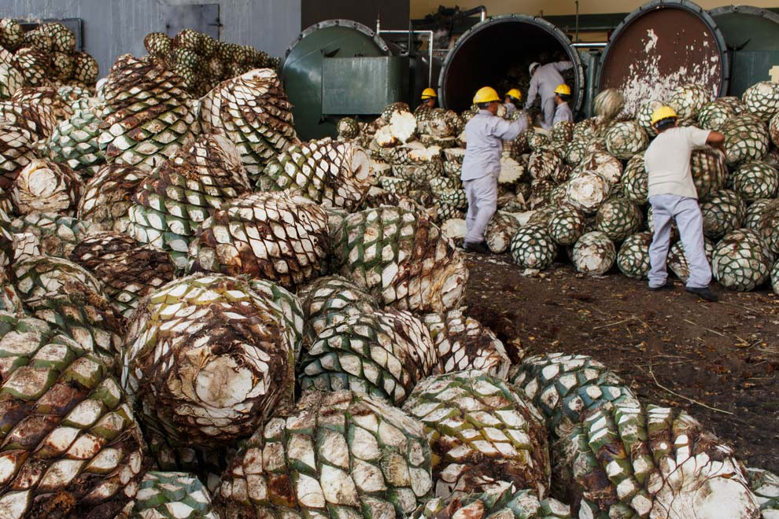

§ 01Sectores
Industrias candidatas.

01
Ganadería
Estiércol bovino · feedlots · operaciones intensivas

02
Porcicultura
Aguas residuales y purines · granjas tecnificadas

03
Lechería
Estiércol bovino · aguas de lavado · suero

04
Agroindustria
Caña · palma · piña · aguacate · café

05
Procesadoras alimentos
Frutas · vegetales · cárnicos · pesca

06
Bebidas
Cervecerías · destilerías · refrescos · jugos

07
Gestión de residuos
Rellenos · plantas tratamiento · FORSU